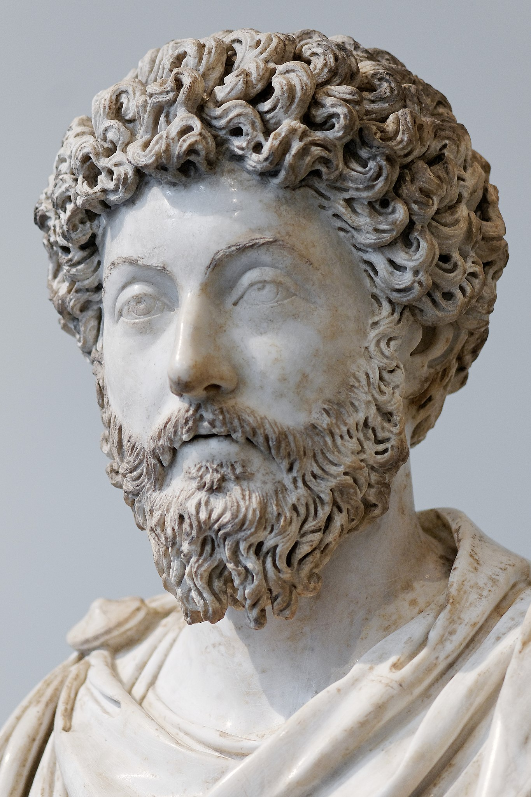

Marcus Aurelius Antoninus
was Roman emperor from 161 to 180 AD and a Stoic philosopher. He was the last of the rulers known as the Five Good Emperors (a term coined some 13 centuries later by Niccolò Machiavelli), and the last emperor of the Pax Romana, an age of relative peace and stability for the Roman Empire lasting from 27 BC to 180 AD. He served as Roman consul in 140, 145, and 161.
More information
